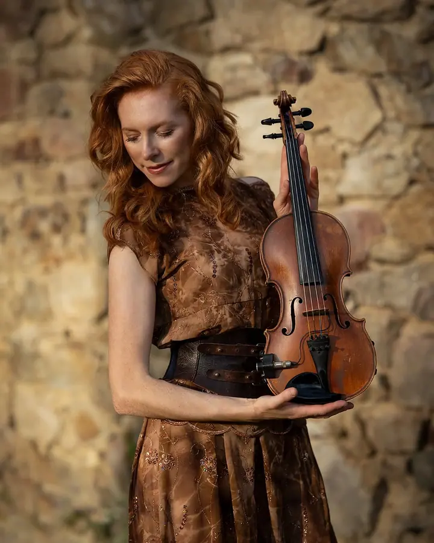
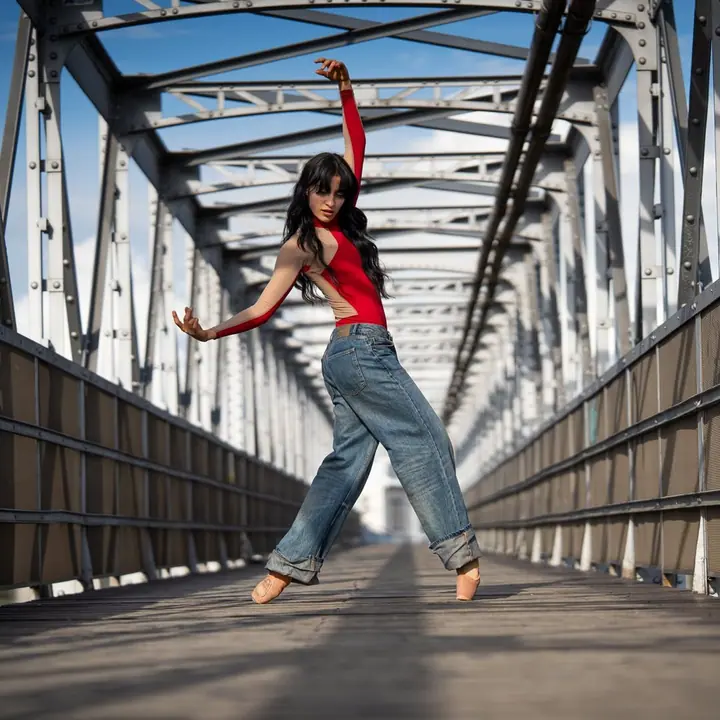
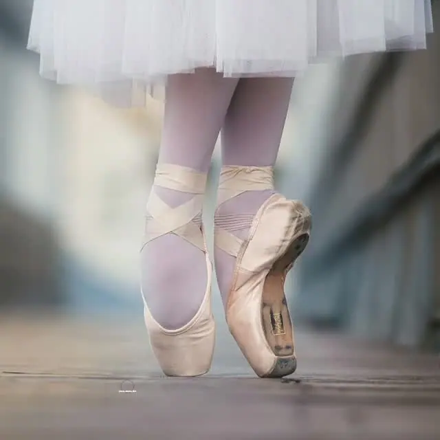
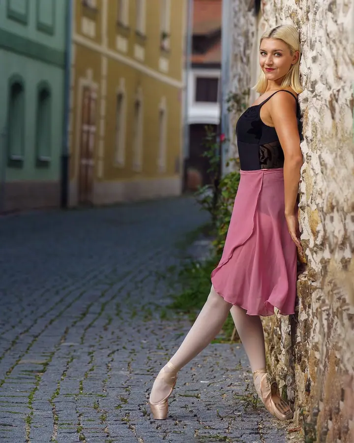
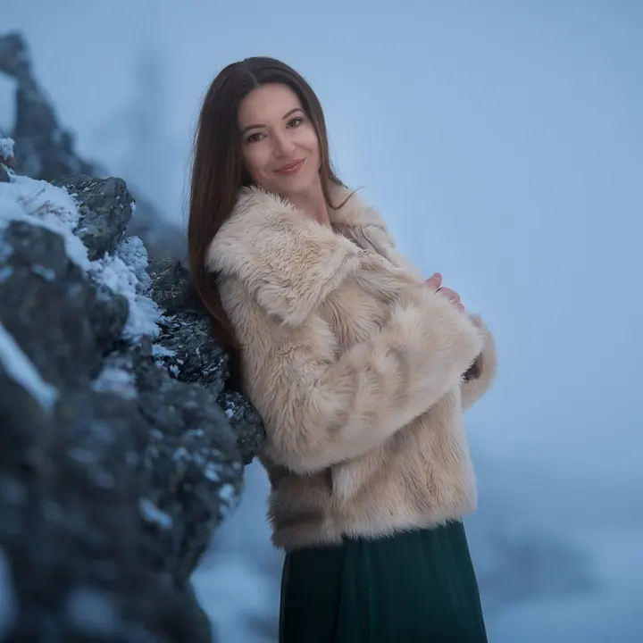
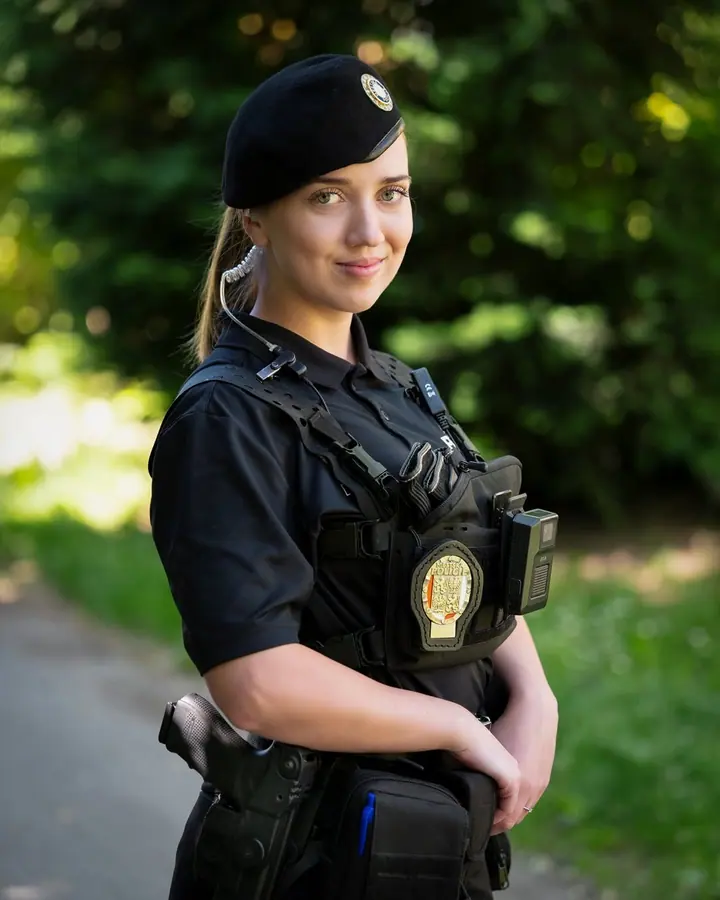
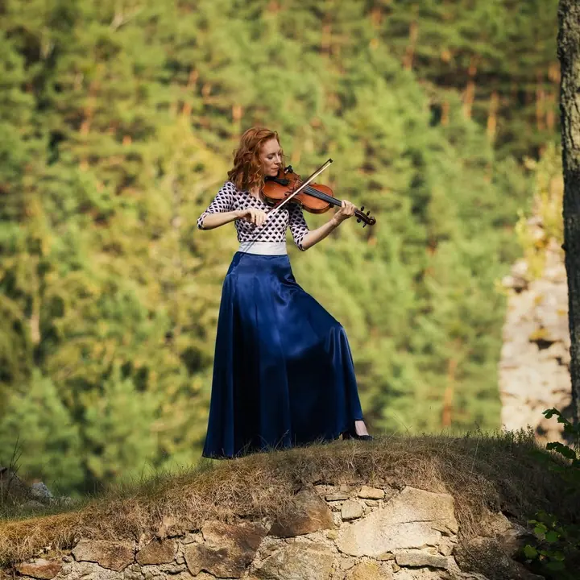

01 / 04
Lifestyle a komerční portréty
Fotíme venku nebo v interiéru na bílém, černém či béžovém pozadí. Hodí se pro jednotlivce, páry, těhotenské focení i rodiny.
Zeptat se na termín→






Svatby a portréty v jižních Čechách
Zeptat se na termín →(01) Ahoj
Jmenuji se Jan Pešek, ale klidně mi říkejte Honza. Fotím svatby, portréty a komerci v jižních Čechách a s kameramanem Tomášem k tomu přidáme i video . Poradím vám s pózováním, vysvětlím světlo a bude u toho sranda.
672lidí sleduje mou práci na Instagramu
282příspěvků s fotkami a příběhy
(02) Co dělám
01 / 04
Fotíme venku nebo v interiéru na bílém, černém či béžovém pozadí. Hodí se pro jednotlivce, páry, těhotenské focení i rodiny.
Zeptat se na termín→Dále nabízím
Fotím obřad, portréty novomanželů i skupinové fotky hostů a skupinku klidně zorganizuji sám. Cenu skládáte jako stavebnici, takže objednáte jen to, co opravdu chcete.
↗Fotky pro firmy, školy a školky do katalogů, na web a na sociální sítě. Patří sem i eventy, kalendáře a volební kampaně.
↗S kameramanem Tomášem tvoříme sehraný tým a pracujeme zvlášť i společně. Tomáš natáčí videa a má na starosti dron i akční kameru.
↗(04) Postup
Od první zprávy po hotovou galerii.
Krok 1 z 4
Sejdeme se nebo si zavoláme přes video a doladíme, co si představujete a co od focení čekáte.
Krok 2 z 4
Na Budějovicku a Krumlovsku se na místo podívám předem, abych věděl, kde bude to nejlepší světlo.
Krok 3 z 4
Poradím s pózováním a s organizací skupinových fotek. Snažím se, aby to bylo rychlé a s humorem.
Krok 4 z 4
Z nafocených fotek si vyberete ty nejlepší. Upravím je a dostanete je v rozlišení na web i na tisk, na přání i v černobílé verzi.
Tancuj na cestě životem
(05) Za objektivem
Jsem budějovický fotograf, produkční a majitel těchto stránek. Fotím od doby, kdy spolužáci neuměle malovali v Altamiře na stěny mamuty. Rawy, JPG a TIFFy jsou moje území a na Murphyho zákony jsem expert.
Nejradši fotím lidi, kteří něco dělají naplno. Baletky, hudebníky, sportovce a fitness, ale taky páry v jejich velký den. Fotím, protože mě to baví. Je to legrace i nervy v jednom a jsem v tom s vámi.
Nejsem tichý fotograf v koutě. Když něco fungovat nebude, řeknu vám to a postavíme se jinam, aby fotky nebyly prostě blbý. Vím, že pro chlapy je focení často utrpení, takže se snažím být rychlý. S kameramanem Tomášem jsme jeden tým a nabízíme foto i video od první schůzky po finální fotky.
Jan
Jan Pešek · Svatební a portrétní fotograf
Termíny na svatební sezónu 2027 jsou otevřené. Ozvěte se raději dřív než týden před svatbou, nejlépe telefonem, e-mailem, SMS nebo přes formulář.
Zhruba 2 hodiny focení před obřadem, během něj a po něm, společnou schůzku, obhlídku místa a až 100 upravených fotografií. K tomu 40 vámi vybraných fotek vytištěných ve formátu 22×15 cm.
To znám velmi dobře. Snažím se být rychlý a pánům utrpení zbytečně neprodlužovat. Stačí, když nahodí úsměv George Clooneyho.
Portrét stojí 2000 Kč. Fotíme zhruba hodinu až hodinu a půl a vy si vyberete 10–12 fotek, které vám upravím pro web i tisk.
(07) Kontakt
Napište pár vět o tom, co si představujete, a termín, který se vám hodí.
info@janpesek.com